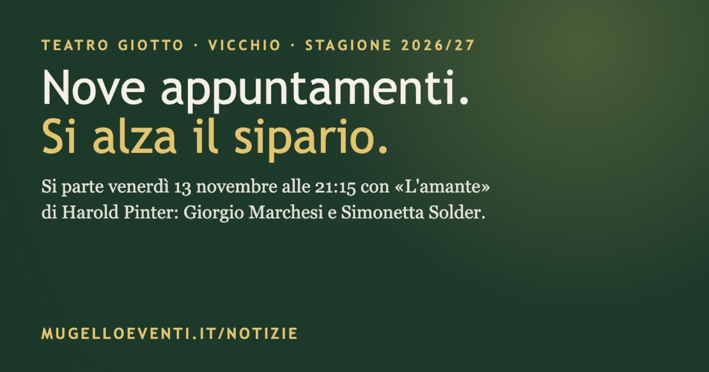

Teatro Giotto di Vicchio, la stagione parte venerdì 13 novembre con «L'amante» di Pinter
Nove appuntamenti fino ad aprile, con Amanda Sandrelli, Giulio Scarpati, Paolo Hendel e Stefano Fresi. Apre la coppia Giorgio Marchesi e Simonetta Solder.

Un matrimonio, un amante che bussa ogni pomeriggio e un marito che lo sa. Venerdì 13 novembre alle 21:15 il Teatro Giotto di Vicchio apre la stagione 2026/2027 con «L'amante», tratto dall'opera di Harold Pinter, con Giorgio Marchesi e Simonetta Solder e la regia di Veronica Cruciani.
Il gioco di Sarah e Richard
Sarah e Richard tengono vivo il loro matrimonio con un gioco ambiguo: ogni pomeriggio lei riceve un amante, con il tacito consenso del marito. Poi il confine tra finzione e verità si assottiglia e il rituale comincia a incrinarsi. Come nella tradizione di Pinter, i due coniugi interpretano altre identità per restare insieme, e la finzione diventa l'unico spazio in cui la verità si lascia sopportare.
Lo spettacolo dura un'ora e mezza ed è prodotto da Savà Produzioni Creative. Scene di Maria Spazzi, costumi di Erika Carretta, luci di Gianni Staropoli, drammaturgia sonora di John Cascone.
Nove appuntamenti fino ad aprile
Il cartellone nasce dalla collaborazione tra il Comune di Vicchio e la Fondazione Toscana Spettacolo: sette spettacoli di prosa, un concerto del Giotto Jazz Festival e una serata per San Silvestro. Tra i protagonisti ci sono Amanda Sandrelli, Giulio Scarpati, Paolo Hendel, Beatrice Schiros, Stefano Fresi e Alessandro Riccio.
Venerdì 13 novembre, 21:15 · L'amante, con Giorgio Marchesi e Simonetta Solder
Venerdì 11 dicembre, 21:15 · Metaforicamente Schiros, con Beatrice Schiros
Giovedì 31 dicembre, 22:30 · Borderline, con Lara Gallo (San Silvestro, fuori abbonamento)
Venerdì 15 gennaio, 21:15 · Bruna è la notte, con Alessandro Riccio e Alberto Becucci
Giovedì 28 gennaio, 21:15 · Troilo e Cressida. L'Iliade raccontata da Shakespeare, con I Sacchi di Sabbia
Mercoledì 10 febbraio, 21:15 · Algoritmo: lui e l'AI
Venerdì 5 marzo, 21:15 · Terzo tempo, con Lucia Vasini e Paolo Hendel
Domenica 21 marzo, 17:00 · La musica del silenzio, con Stefano Fresi e Giovanni Guidi (Giotto Jazz Festival)
Mercoledì 14 aprile, 21:15 · Cari genitori, con Giulio Scarpati e Amanda Sandrelli
Biglietti e informazioni
Il biglietto costa 17 euro, ridotto 15, e 8 euro per chi ha meno di 30 anni. La sera di San Silvestro si paga 30 euro, 25 per gli abbonati. La biglietteria apre il giorno prima di ogni spettacolo dalle 18:15 alle 20 e la sera dello spettacolo dalle 20:15.
Per informazioni: 353 4906678, teatrogiottovicchio@gmail.com, https://www.teatrogiotto.it
La scheda nella guida del weekend: https://mugelloeventi.it/weekend/13-15nov2026/l-amante-al-teatro-giotto/
Le stagioni di tutti i teatri del Mugello: https://mugelloeventi.it/teatri/
Fonte: Comune di Vicchio, ufficio stampa (MET Città Metropolitana di Firenze)